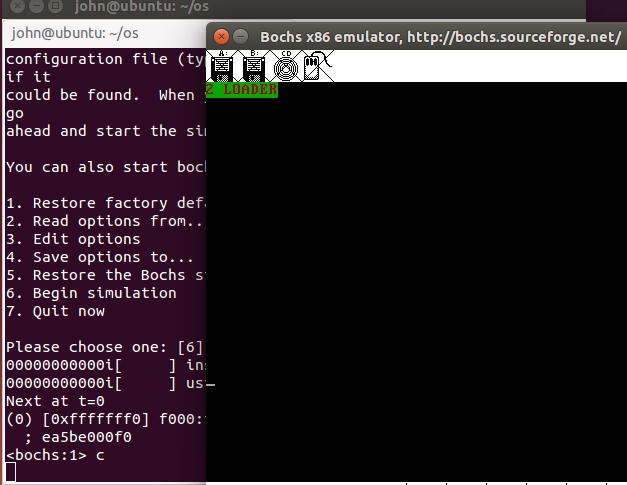

TreeviewCopyright @doctording all right reserved, powered by aleen42
让MBR直接操作硬盘，对硬盘进行读写操作
- 上一步成功进入MBR了，这样MBR的功能就能丰富下去
- 硬盘概念：柱面，磁道，扇区
环境
- ubuntu14-32bit
- bochs-2.4.5
注：ubuntu安装bochs如果有问题，可自行搜索解决
代码编写
代码目录相应的code文件夹
需要自己修改Makefile,生成的目录可自行设定

- 通过
bximage来制作硬盘

在配置bochs文件时，根据需要配置，具体见code/bochsrc.dist文件
- bochs模拟了硬件
这里需要添加从硬盘启动的，硬盘信息
ata0-master: type=disk, mode=flat, path="/home/john/os/hd30M.img", cylinders=60, heads=16, spt=63
运行虚拟机
- 制定配置文件运行
$bochs -f bochsrc.dist

- 按6开始模拟

- 再按c运行起来

- 遇到模拟器卡死情况，kill杀死

分析
首先硬盘结构如下

实模式下的1MB内存布局
http://book.51cto.com/art/201604/509566.htm
硬盘当成一个IO设备，其有硬盘控制器（I/O接口）,就像显示器一样，其有显卡（也称为显示适配器），显存
我们操作了 用于文本模式显示适配器 ，其在1M物理地址下的开始地址是 0xB8000（有32KB大小）。
- 首先需要明确：对
0xb8000这个内存地址写入内容，就可以在屏幕上输出文本; - 本例我们使用gs寄存器存储了
0xb8000这个地址，loader则存到磁盘的第2扇区，其操作了gs寄存器; - mbr操作磁盘第二扇区（即loader），读取的内容存到
0x900这个内存地址中; - 此后，当mbr jmp到
0x900这个内存地址时，就会执行0x900这块内存的指令，也就是是loader中的内容，也就是操作0xb8000这个内存地址，也即向屏幕中显示文本。